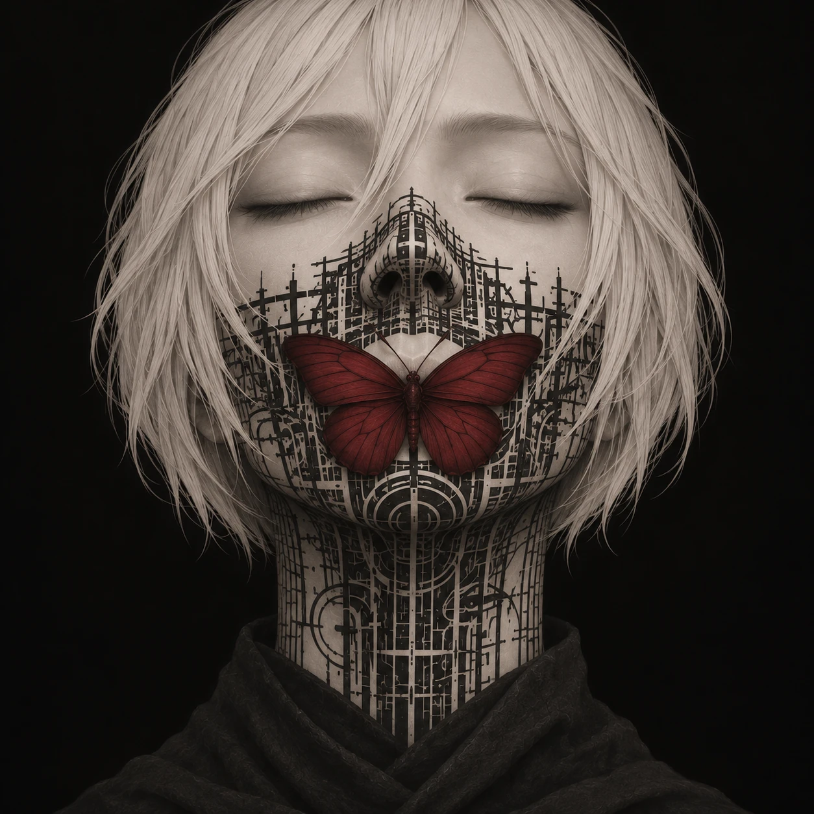

Independent artist / visual worlds
Between shadow
and light.
Surreal visions, intimate portraits, and dreamlike scenes by REMQuill.
Enter the collection
A world in fragments
The collection
Portraits, symbols, and visions from the edge of a dream.
New work is on its way. Check back soon.
Inside the world
REMQuill
A visual world drawn between shadow and illumination: surreal figures, vivid color, mysterious symbols, and moments of quiet beauty. This space is a home for the work as it grows.
If you feel like it
Support the work
Your visit is already appreciated. If you'd like to help support future work, you can leave an optional donation.
Support on Ko-fiKo-fi donations will be available here soon.